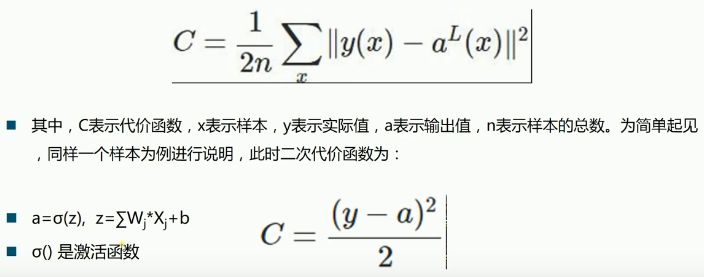
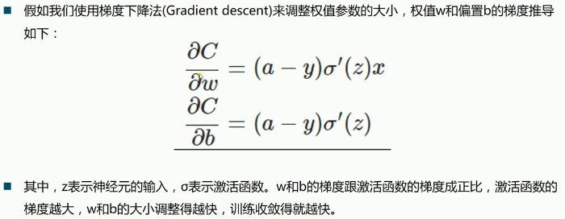
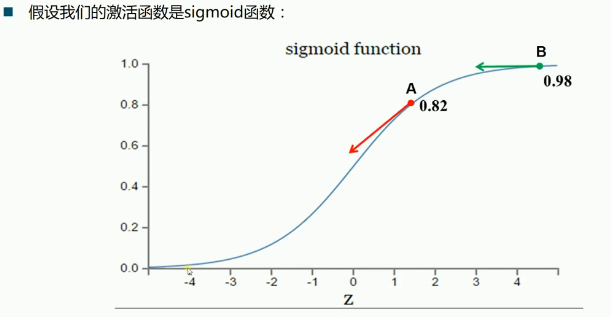
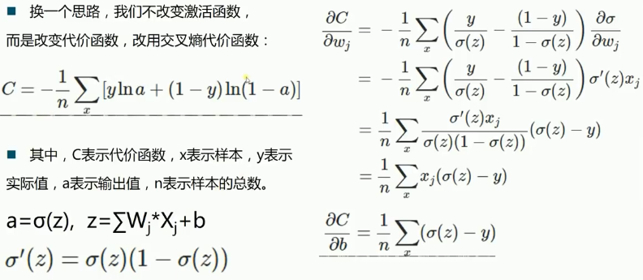
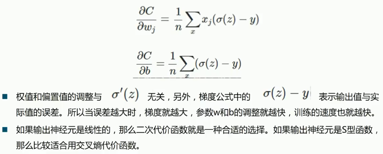
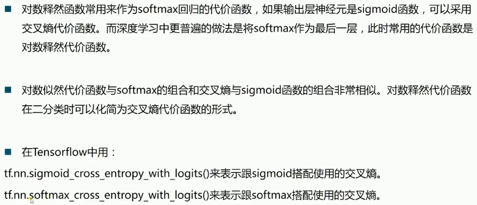

Tensorflow 基本调参技巧
Table of Contents
1 Tensorflow_3
- loss fn 的选择交叉熵适合 s 型激(sigmoid, tanh)活函数; 方差适合线性激活函数
- dropout 对治过拟合: 训练速度加快,但收敛速度放慢,对治过拟合, 你可以设置 keep_probability of each layer
- epoch_number 会影响训练效果, 你可能要多试几种 epoch 值来最终决定自己的 epoch.你应该观察 acc_test 和 acc_train, 当他们数值不怎么变化时, 也就意味着他们收敛了,这个时候的batch_number最合适
- 优化器: 一般在做实验时选择速度较快的优化器(比如Ada系), 真正出论文的时候选用精度最高的
- W 和 b 的初始值: W 一般使用截断(truncated_normal)的标准差为0.1的高斯随机值作为初始值; b 一般使用 0.1 作为初始值






2 Dropout
<<包导入>> <<数据准备>> # numpy构造(with/without noise) # 从已有数据集导入内存 <<图参数>> # 批次大小, 批次数量 # dropout 保留率 <<图构造>> # 一模, # 两函: err fn(单点错误), loss fn(整体错误) # 两器: 初始化器, 优化器 # 准确率计算 <<图计算>> # 运行两器 # 获得准确率 # 绘图
1: import tensorflow as tf 2: from tensorflow.examples.tutorials.mnist import input_data 3: 4: # 载入数据 5: mnist = input_data.read_data_sets("MNIST", one_hot=True) 6: 7: 8: # 设置模型参数 9: # 设置批次大小 10: batch_size = 100 11: # 计算共有多少批次 12: n_batch = mnist.train.num_examples // batch_size 13: 14: # 定义两个 placeholder 15: x = tf.placeholder(tf.float32, [None, 784]) 16: y = tf.placeholder(tf.float32, [None, 10]) 17: keep_prob = tf.placeholder(tf.float32) 18: 19: # 创建简单神经网络(无隐藏层) 20: W1 = tf.Variable(tf.truncated_normal([784, 2000], stddev=0.1)) (WandB) 21: b1 = tf.Variable(tf.zeros([2000]) + 0.1) 22: L1 = tf.nn.tanh(tf.matmul(x, W1) + b1) 23: L1_drop = tf.nn.dropout(L1, keep_prob) 24: 25: W2 = tf.Variable(tf.truncated_normal([2000, 2000], stddev=0.1)) 26: b2 = tf.Variable(tf.zeros([2000]) + 0.1) 27: L2 = tf.nn.tanh(tf.matmul(L1_drop, W2) + b2) 28: L2_drop = tf.nn.dropout(L2, keep_prob) 29: 30: W3 = tf.Variable(tf.truncated_normal([2000, 1000], stddev=0.1)) 31: b3 = tf.Variable(tf.zeros([1000]) + 0.1) 32: L3 = tf.nn.tanh(tf.matmul(L2_drop, W3) + b3) 33: L3_drop = tf.nn.dropout(L3, keep_prob) 34: 35: W4 = tf.Variable(tf.truncated_normal([1000, 10], stddev=0.1)) 36: b4 = tf.Variable(tf.zeros([10])+ 0.1) 37: prediction = tf.nn.softmax(tf.matmul(L3_drop, W4) + b4) 38: 39: # 二函,二器 40: init = tf.global_variables_initializer() 41: optimizer = tf.train.GradientDescentOptimizer(0.2) 42: loss = tf.reduce_mean(tf.nn.softmax_cross_entropy_with_logits_v2(labels=y, logits=prediction)) 43: train = optimizer.minimize(loss) 44: 45: # 预测对错存在一个向量中 46: correct_prediction = tf.equal(tf.argmax(y,1), tf.argmax(prediction, 1)) 47: # 计算准确率 48: accuracy = tf.reduce_mean(tf.cast(correct_prediction, tf.float32)) 49: 50: 51: # 图计算 52: with tf.Session() as sess: 53: sess.run(init) 54: # 采取训练一轮就测试一轮的方式 55: for epoch in range(31): 56: # 训练模型 57: acc_train = 0 58: for batch in range(n_batch): 59: batch_xs, batch_ys = mnist.train.next_batch(batch_size) 60: sess.run(train, feed_dict={x:batch_xs, y:batch_ys, keep_prob:1.0}) 61: 62: # 测试模型 63: # 测试集必须使用已经训练完毕的模型 64: acc_test = sess.run(accuracy, feed_dict={x:mnist.test.images, y:mnist.test.labels, keep_prob:1.0}) 65: acc_train = sess.run(accuracy, feed_dict={x:mnist.train.images, y:mnist.train.labels, keep_prob:1.0}) 66: print("Iter " + str(epoch) + " ,Train:" + str(acc_train) + " ,Test:" + str(acc_test))
0 - 389d4752-a44f-49d9-a250-494187b67e51
一般对W初始化为截断的标准差为0.1的高斯随机值, 一般对b初始化为0.1
某一层神经元的输出
--
L1_drop = tf.nn.dropout(L1, keep_prob)
---------
保留多少百分比神经元
一般而言你想要手动指定的值, 或是从其他地方获取的值, 都设置为 placeholder, 比如 keep_prob, dataset, labels; 而你希望及其取学习的参数, 则设置为 Variable, 比如 W 和 b. 一般 dropout 的 keep_prob 也设置为 placeholder 交由我们自己指定.
import numpy as np p = np.polynomial.Polynomial([1, 2, 3]) p
0 - a66c0a82-bedf-48c4-acdc-2d6b93640de2